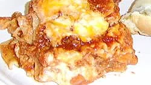

Lasagna

Grandma's Famous Lasagna
I don't have many memories of my grandma, but one of the big memories I have
is helping grandma make her famous lasagna. It's one of my favorite memories
and one of my favorite food. It may seem complicated at first but it couldn't
be easier
Ingredients
- 1 package lasagna
- 1 pound lean ground beef
- salt and pepper to taste
- 1 jar spaghetti sauce
- 1 clove garlic
- 1/2 pound shredded mozzarella cheese
- 1/2 pound shredded cheddar cheese
- 1 pint ricotta cheese
Directions
- Bring a large pot of lightly salted water to a boil. Add pasta and cook for
8-10 minutes or unil al dente; drain.
- Preheat oven to 250 degrees F (175 degrees C). In a large skillet over medium-high
heat, brown beef and season with salt and pepper; drain. Stir in spaghetti sauce
and garlic and simmer 5 minutes.
- In a medium bowl, combine mozzarella, Cheddar and ricotta; stir well. In
9/13 inch pan, alternate layers of noodles, meat mixture and cheese mixture until
pan is filled.
- Bake in preheated oven for 20 minutes, or until cheese is melted and bubbly.